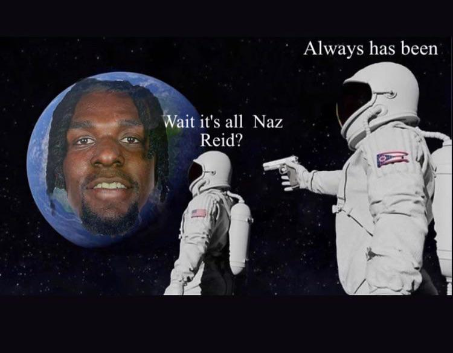
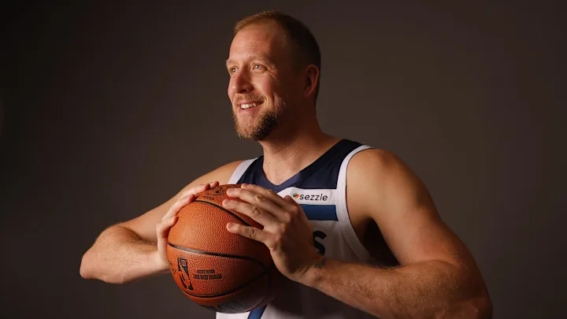

Minnesota Timberwolves Basketball
Since 1989
Notable Players

Anthony Edwards
Anthony Edwards is the Timberwolves' superstar guard, who some believe to be the son of Michael Jordan. He is the current face of the league. He played college basketball for the Georgia Bulldogs and was selected with the first overall pick by the Timberwolves in the 2020 NBA draft. He will soon take Minnesota to the promised land. He's also a great father.
"Y'all better stand down, I'm the truth"

Naz Reid
Naz Reid.

Joe Ingles
Your favorite bench player’s favorite bench player, Joe Ingles is a 38-year-old Australian forward. He joined the Timberwolves in 2024 on a one-year, $3.3 million deal and re-signed in 2025. Where would the team be without him?